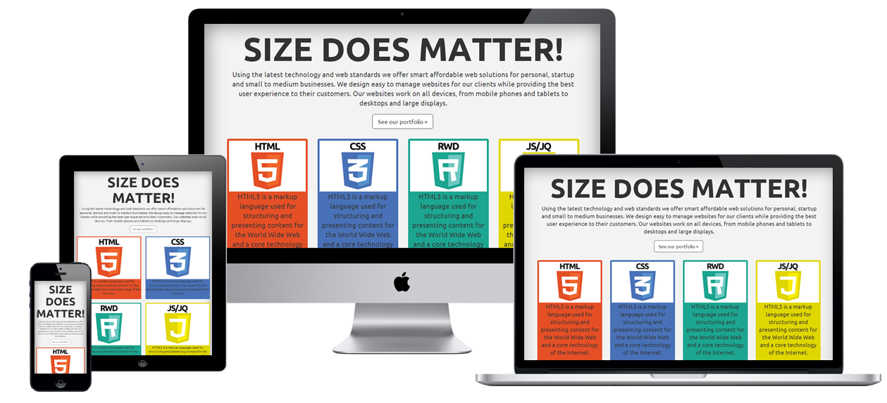

Découvrir le métier d'un dévellopeur front-end
Un développeur front-end est un professionnel de l'informatique
spécialisé dans la conception, le développement et la maintenance de
l'interface utilisateur d'un site web ou d'une application. Voici les
principales responsabilités d'un développeur front-end :

Le développeur front-end est responsable de la création de la partie
visible et interactive d'un site web ou d'une application en utilisant
des langages de programmation tels que HTML, CSS et JavaScript. Il
traduit les maquettes graphiques en code utilisable.
Le dévellopeur front sera aussi améné à utiliser un ou plusieurs
framework.
Un framework front-end est un ensemble d'outils, de bibliothèques et
de conventions qui permettent de faciliter le développement de
l'interface utilisateur d'une application web. Il fournit une
structure de base et des fonctionnalités prédéfinies pour accélérer le
processus de développement front-end.
Voici quelques raisons pour lesquelles les développeurs utilisent des
frameworks front-end :
1. Productivité accrue : Les frameworks front-end offrent des
fonctionnalités réutilisables et des modèles de conception prédéfinis
qui permettent de gagner du temps lors du développement. Ils
fournissent également une structure bien organisée qui facilite la
collaboration entre les développeurs.
2. Consistance du code : Les frameworks front-end imposent souvent des
conventions de codage cohérentes. Cela garantit que le code écrit est
facilement compréhensible et maintenable, même lorsque de nombreux
développeurs travaillent ensemble sur le projet.
3. Réactivité et interactivité : Les frameworks front-end fournissent
des outils et des bibliothèques qui facilitent la création
d'interfaces utilisateur réactives et interactives. Ils offrent des
fonctionnalités telles que la liaison de données (data binding)
bidirectionnelle, les composants réutilisables, la gestion des
événements, etc.
4. Conception adaptative : Les frameworks front-end incluent souvent
des fonctionnalités pour créer des applications web adaptatives
(responsive) qui s'adaptent dynamiquement à différents dispositifs et
tailles d'écran. Cela permet de créer des applications qui offrent une
expérience utilisateur cohérente sur des ordinateurs de bureau, des
smartphones et des tablettes.
Il veille à ce que l'interface utilisateur soit compatible avec
différents navigateurs web et périphériques, tels que les ordinateurs de
bureau, les smartphones et les tablettes. Il est important que
l'interface s'adapte et fonctionne correctement sur différentes
résolutions d'écran.
Le développeur front-end reste à jour avec les dernières tendances, les
nouvelles technologies et les normes de codage pour assurer une
interface utilisateur moderne et conforme aux standards de l'industrie.